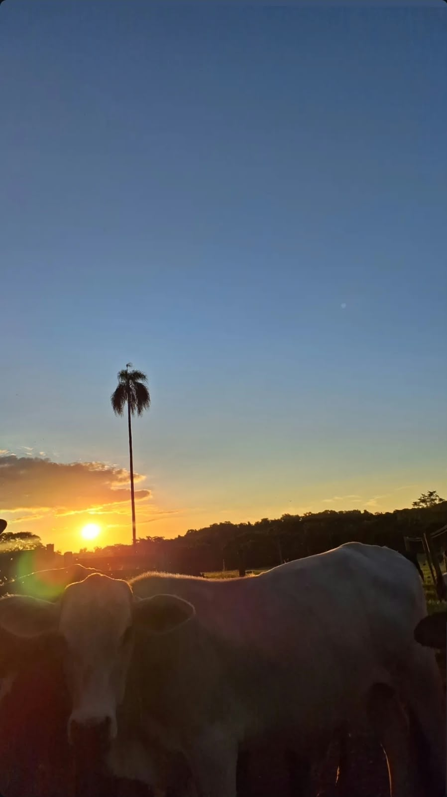

Quem Somos?
Somos um comércio familiar, com amor pelo campo e orgulho de nossas raízes. Valorizamos a tradição e o cuidado em cada detalhe, buscando oferecer produtos do sítio que levem um pouco da vida no campo até a mesa de nossos clientes. Acreditamos na importância de manter nossas origens e compartilhar o sabor e a simplicidade que fazem parte da nossa história.
Fale com a gente